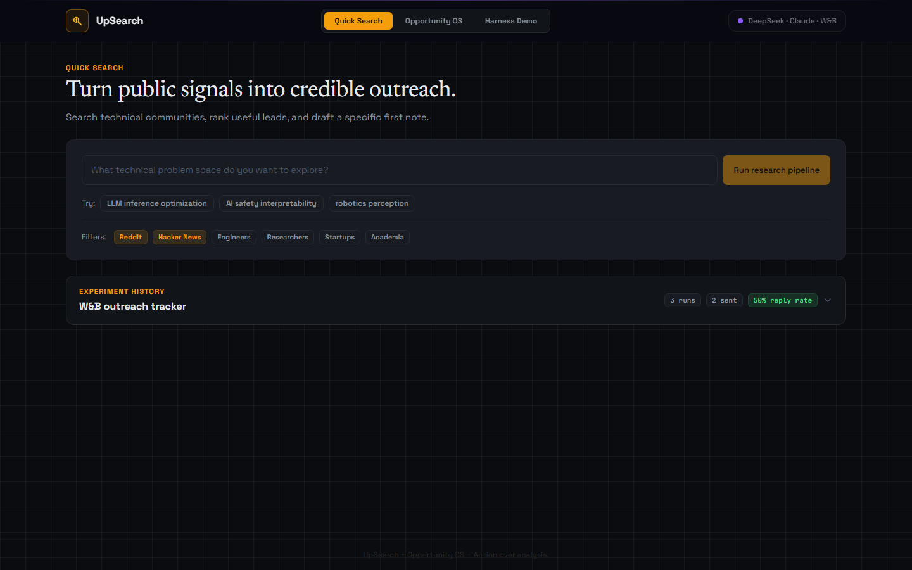
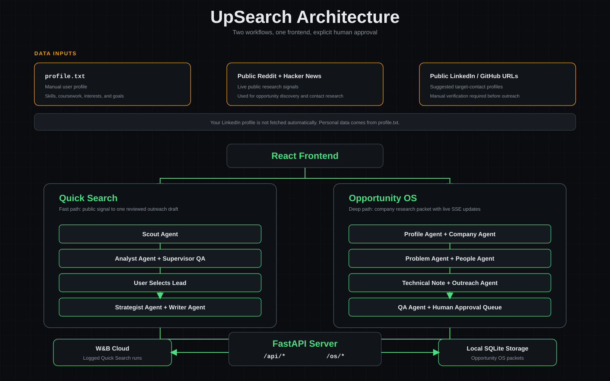
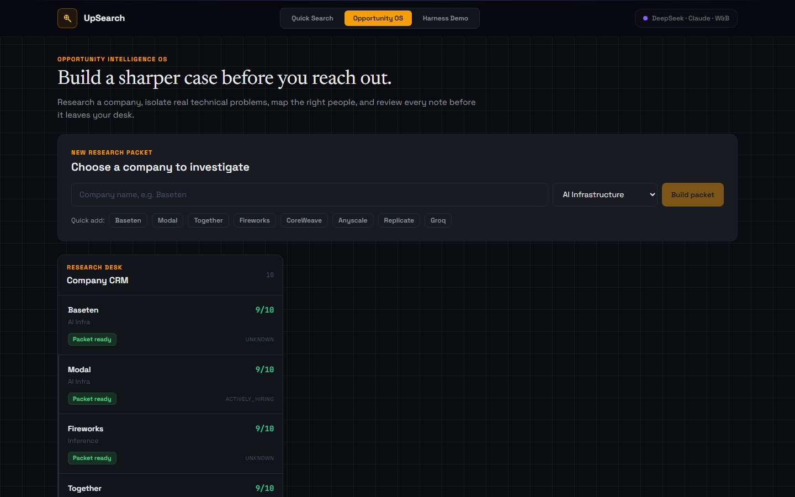

Quick Search
Search public technical signals, rank leads, draft one credible note, and track the outcome.
From public signal to credible outreach
UpSearch helps students research real engineering problems, identify useful contacts, and draft specific outreach without mass messaging or fabricated experience.
Utility
The ProblemStudents start with a generic message and hope it lands. UpSearch starts with evidence: a company, a public technical signal, and a realistic reason to reach out.
Find real public signals from companies and technical communities.
Compare opportunities against an honest student profile.
Create one specific email or LinkedIn note under clear rules.
Keep a human in control before any external message is used.
Agent Orchestration
Architecture
Live Product
Demo Flow
Search public technical signals, rank leads, draft one credible note, and track the outcome.

Build a deeper company packet, maintain a CRM, and review drafts in a human approval queue.
Technical Execution
Sound DecisionsFocused analyst-workstation interface.
Provider routing for agent completions.
Public signal for research and discovery.
Local records with no automatic sending.
Sponsor Usage + Close
Why It ScoresEvery logged Quick Search run captures the lead, fit score, word count, send status, supervisor quality scores, and the final draft artifact.
Specialized agents pass structured outputs into the next stage.
Students reach out with evidence instead of generic messages.
Live data, SSE updates, provider routing, QA, and local CRM storage.
Cold outreach becomes a research workflow rather than a volume game.
W&B tracks what gets replies so the workflow improves over time.
UpSearch: better research, more credible outreach, and a human decision at the final step.